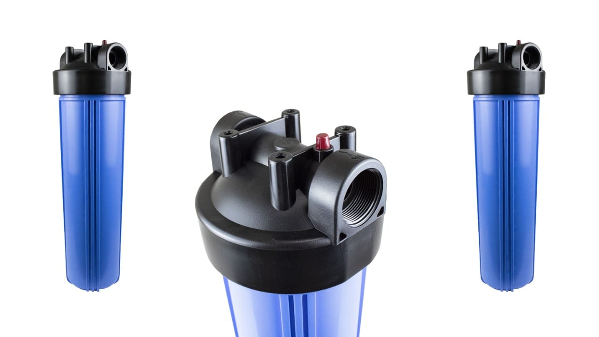
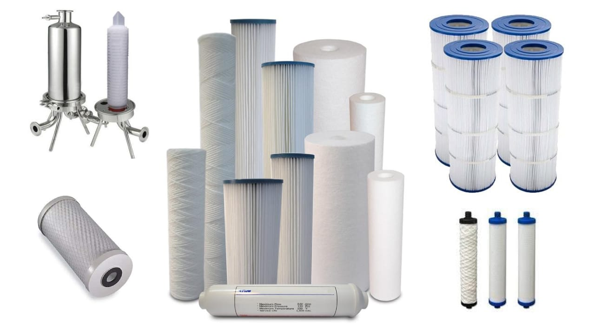
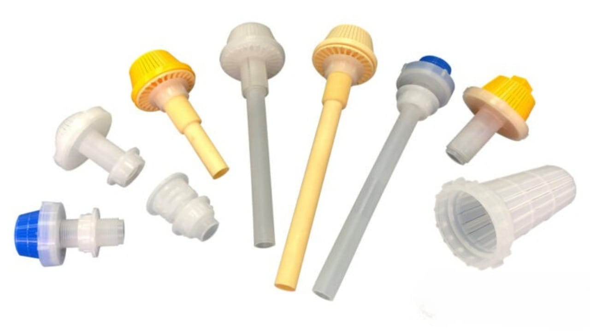
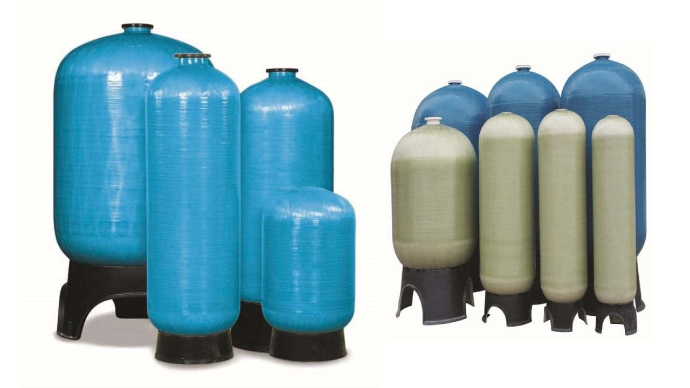
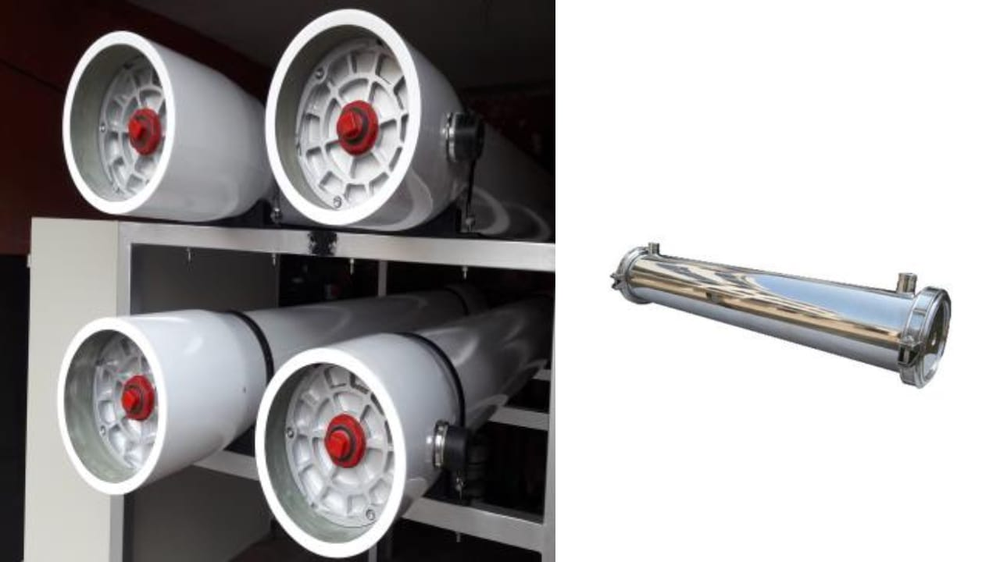
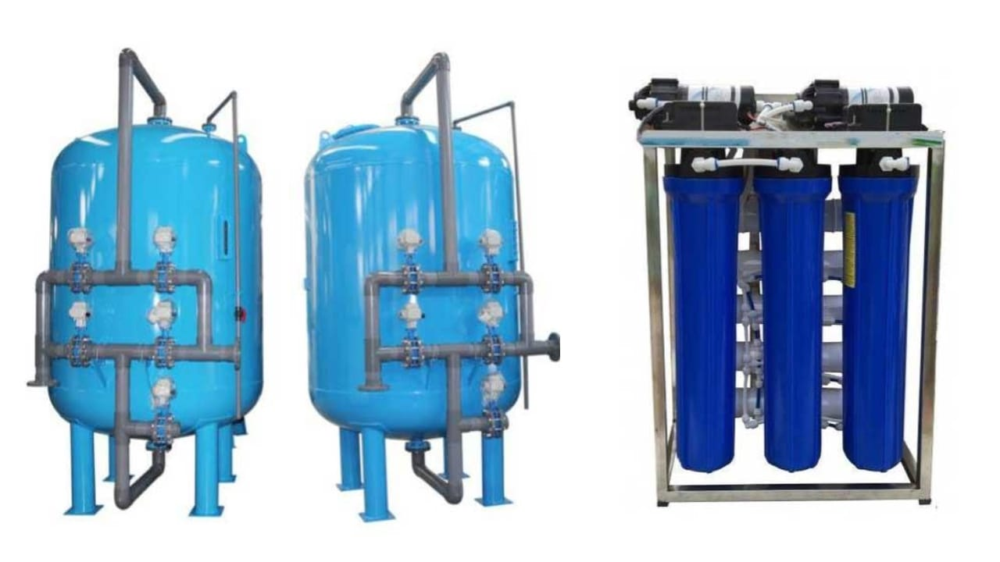

Filtração
5 equipamentos

Membranas
Membranas de Osmose Reversa
Membranas de alta performance para dessalinização e desmineralização industrial. Compatíveis com sistemas de simples e duplo passo. Marcas certificadas: Hidranautics, DOW Filmtec e outras.
0,001 micronAlto fluxoIndustrial

Filtros de Sedimentos
Filtros Cartuchos em Polipropileno — BIG BLUE
Filtros de polipropileno de alta capacidade para retenção de sedimentos, partículas e sólidos suspensos. Ideais como pré-filtros para sistemas de osmose reversa e purificação. Fácil substituição do cartucho.
Pré-filtragemPPAlta capacidade

Meios Filtrantes
Leitos Filtrantes
Meios filtrantes granulados para retenção de partículas, turbidez e sólidos em suspensão. Disponíveis em areia, antracito, zeólita, carvão ativado e mistos. Alta durabilidade e baixo custo operacional.
AreiaAntracitoZeólitaCarvão

Filtros Substituíveis
Filtros de Cartucho e Elementos Filtrantes
Cartuchos substituíveis para filtragem em múltiplas etapas. Disponíveis em polipropileno, carvão ativado e fibra de vidro. Fácil manutenção e ampla compatibilidade com carcaças padrão do mercado.
PPCarvãoFibraPadrão

Distribuição
Crepinas e Distribuidores
Componentes de distribuição e coleta para filtros e leitos filtrantes. Garantem distribuição uniforme da água e evitam passagem de material filtrante. Fabricados em PVC, aço inoxidável e polipropileno.
PVCInoxPPAlta durabilidade
Componentes Industriais
4 equipamentos

Dosagem Química
Bombas Dosadoras de Cloro
Bombas de dosagem para injeção precisa de hipoclorito, PAC, biocidas e outros produtos químicos. Marcas líderes: ProMinent, Grundfos, Stenner. Controle digital e analógico, compatíveis com automação.
ProMinentDigitalDosagem precisa

Automação
Válvulas Automáticas e Cabeçotes
Válvulas e cabeçotes automáticos para abrandadores, filtros de carvão, filtros de areia e leitos filtrantes. Marcas: Pentair, Clack, Fleck. Programação de retrolavagem e regeneração automática.
PentairClackFleckAutomático

Pressão
Vasos de Pressão Filtrantes
Vasos e tanques pressurizados para filtros de areia, carvão, leitos de zeólita e abrandadores. Fabricação em fibra de vidro (PRFV) ou aço carbono/inox. Diversas capacidades disponíveis.
PRFVAço CarbonoInoxAlta pressão

Membranas
Vasos de Alta e Baixa Pressão para Membranas
Vasos especializados para acomodar membranas de osmose reversa e nanofiltração. Disponíveis para 1, 2, 3, 4, 6 e 7 membranas em série. Materiais: fibra de vidro (FRP) e aço inoxidável. Certificação ASME disponível.
FRPInoxASME1–7 membranas
Potabilidade Residencial e Central
1 equipamento

Água Potável
Purificadores Residenciais e Centrais
Sistemas compactos para produção de água potável de alta qualidade em residências, condomínios e estabelecimentos comerciais. Filtração em múltiplos estágios: sedimentos, carvão ativado e membrana. Instalação centralizada ou por ponto de uso.
MultistágioCentralizadoPonto de usoResidencial